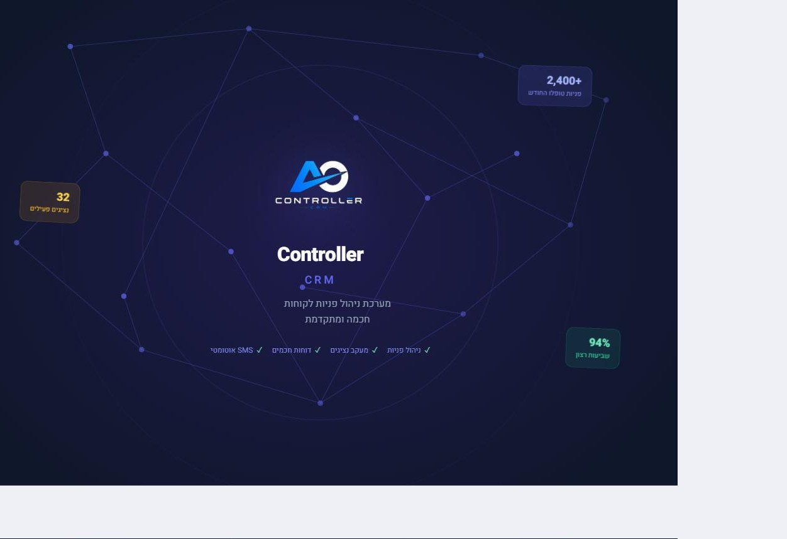
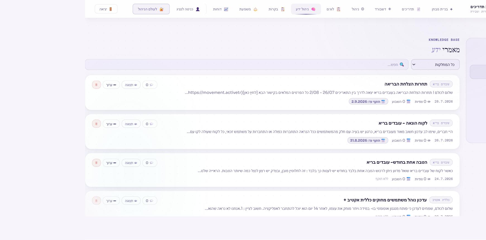
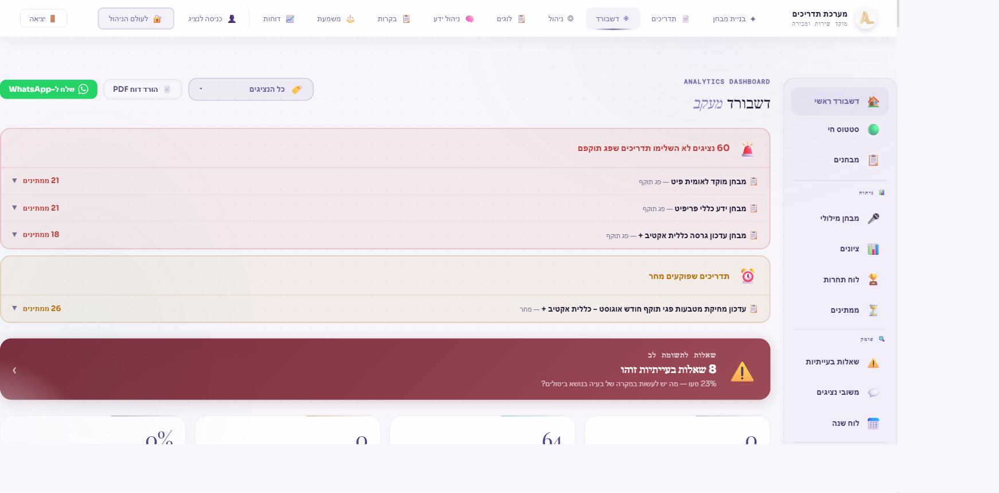
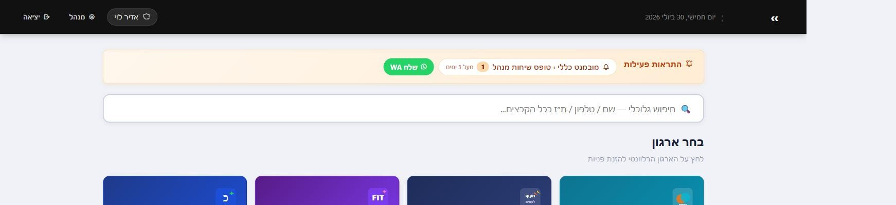

המערכות שלנו
חמש מערכות. אפס עבודה ידנית מיותרת.
כל מערכת כאן כבר בנויה ורצה אצל לקוחות — והיא נקודת פתיחה, לא תבנית סגורה. אנחנו מתאימים כל מערכת בול לתהליך ולשפה של העסק שלכם.

01 · ניהול לקוחות
מערכת CRM
כל פנייה, שיחה והזמנה — בכרטיס לקוח אחד, מסודר וזמין לכל הצוות. במקום לחפש בין וואטסאפ, מייל וטבלאות, כל ההיסטוריה של הלקוח נמצאת במקום אחד.
- כרטיס לקוח מרוכז עם היסטוריית פניות ועסקאות
- סטטוסים, תזכורות ומעקב משימות אוטומטי
- חיבור לוואטסאפ, מייל וטלפון תחת ממשק אחד
- דוחות ביצועים לפי נציג, סטטוס ותקופה
02 · ידע ארגוני
מערכת ניהול ידע
נהלים, תשובות נפוצות, מדריכים והחלטות — כולם מסודרים, מקוטלגים וניתנים לחיפוש חכם. כשעובד חדש נכנס או שאלה חוזרת על עצמה, התשובה כבר מחכה.
- חיפוש חכם בשפה חופשית מתוך כל מאגר הידע
- ניהול גרסאות ועדכונים למסמכים ונהלים
- הרשאות צפייה ועריכה לפי צוות ותפקיד
- מענה אוטומטי לשאלות נפוצות מתוך הידע הקיים

03 · תמונת מצב
דשבורד מכירות
המספרים האמיתיים של העסק — מכירות, יעדים ומגמות — בתצוגה אחת, ברורה ומתעדכנת. בלי לחכות לדוח סוף חודש כדי לדעת איפה אתם עומדים.
- מעקב יעדים מול ביצוע בזמן אמת
- פילוח לפי נציג, מוצר, אזור או תקופה
- התראות אוטומטיות על חריגות ומגמות
- ייצוא דוחות להנהלה בלחיצה אחת

04 · מסמכים ותוקפים
מערכת ניהול קבצים עם התראות
כל הקבצים והמסמכים הקריטיים במקום אחד מסודר — עם התראות אוטומטיות לפני שרישיון פג, חוזה מסתיים או מסמך חסר. בלי הפתעות של הרגע האחרון.
- מאגר קבצים מסודר לפי לקוח, פרויקט או צוות
- התראות אוטומטיות על תוקף, חידוש ומסמכים חסרים
- הרשאות גישה מדויקות לפי משתמש
- חיפוש מהיר בתוך תוכן הקבצים

05 · כוח אדם ומשמרות
מערכת סידור עבודה
סידור משמרות למוקד או לצוות שירות — לפי מחלקה, פריפיט וסניף — בלי טבלת אקסל שמתעדכנת ידנית כל שבוע מחדש. כל נציג נכנס, רואה את המשמרת שלו ומעדכן זמינות.
- סידור עבודה לפי מחלקה, פריפיט וסניף
- כניסת נציגים עצמאית לצפייה בשיבוץ האישי
- ממשק נפרד למנהל ולנציג
- חיפוש מהיר לפי שם ומחלקה